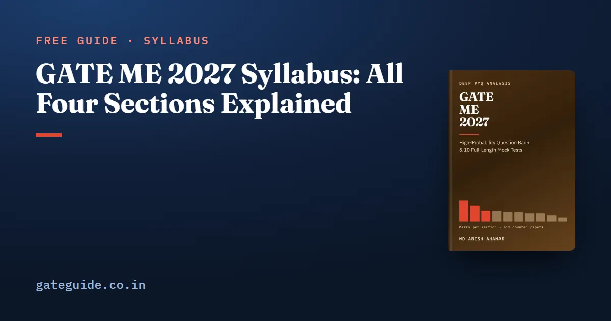

GATE ME 2027 Syllabus: All Four Sections Explained

The GATE ME 2027 syllabus is a three-page official document with four sections built from 23 labelled paragraphs. Each paragraph opens with a label such as "Calculus:" or "Machine Design:" and then lists what you must be able to do. This guide walks the whole document in learning order and says, line by line, what each paragraph asks of you.
In this guide
Key takeaways
- The ME syllabus has four sections and 23 paragraph labels; General Aptitude is a separate document.
- The paper is 100 marks: 15 for General Aptitude and 85 from the four ME sections.
- Turbomachinery sits under Applications in Section 3, not under Fluid Mechanics.
- Control systems, with a PID controller and transfer function, are printed under Vibrations in 2027.
- Section 4 has two new paragraph labels: Additive Manufacturing, and Computer Aided Manufacturing and Automation.
- Read every paragraph as a list of skills, not a list of chapter names.
What a paragraph label is, and why it matters
A paragraph label is the name before the colon at the start of each paragraph in the PDF. "Heat Transfer:" is a label; the phrases after it are what that paragraph covers. There are 23 of them, and together they are the whole technical syllabus.
The sections are larger groupings of those labels. The book this site sells splits the 23 labels into ten technical subjects, because four sections are too coarse to plan a year on. The table shows how the labels fall.
| Section | Paragraph labels |
|---|---|
| 1. Engineering Mathematics | Linear Algebra; Calculus; Differential Equations; Complex Variables; Probability and Statistics; Numerical Methods |
| 2. Applied Mechanics and Design | Engineering Mechanics; Mechanics of Materials; Theory of Machines; Vibrations; Machine Design |
| 3. Fluid Mechanics and Thermal Sciences | Fluid Mechanics; Heat Transfer; Thermodynamics; Applications |
| 4. Materials, Manufacturing and Industrial Engineering | Engineering Materials; Casting, Forming and Joining Processes; Machining and Machine Tool Operations; Additive Manufacturing; Metrology and Inspection; Computer Aided Manufacturing and Automation; Production Planning and Control; Operations Research |
Remember: General Aptitude is worth 15 marks but appears nowhere in the ME syllabus PDF. Read its own syllabus and give it its own slot, as the GATE General Aptitude guide explains.
Section 1: the mathematics you will use everywhere
Six labels make up Engineering Mathematics. Linear Algebra asks for matrix algebra, systems of equations, and eigenvalues and eigenvectors. Calculus is the longest: limits and continuity, mean value theorems, definite and improper integrals, double and triple integrals, partial derivatives, Taylor and Fourier series, and vector calculus with Gauss, Stokes and Green's theorems.
Differential Equations covers first-order and higher-order linear equations, the Euler-Cauchy equation, Laplace transforms, and the heat, wave and Laplace equations. Complex Variables asks for analytic functions, the Cauchy-Riemann equations, Cauchy's integral theorem and the contour integral formula, and Taylor and Laurent series. The last two labels are Probability and Statistics and Numerical Methods, which include trapezoidal and Simpson's rules.
Learn this section first and keep it running. The mechanics, fluids and heat transfer questions all speak its language.
Section 2: from forces to machine parts
Section 2 runs in a natural order. Engineering Mechanics starts with free-body diagrams and equilibrium, then friction with its applications, plane trusses and frames, virtual work, rigid-body kinematics and dynamics, and impulse, momentum and energy.
Mechanics of Materials builds on it. It asks for stress and strain, elastic constants and their relationships, stress and strain transformations in 2D, Mohr's circle, thin-walled pressure vessels, shear force and bending moment diagrams, beam stresses and deflections, torsion, columns, energy methods, thermal stresses, strain gauges, and mechanical properties such as toughness and hardness.
A worked example of "elastic constants and their relationships"
The line asks you to move between constants, not just to name them. The shear modulus follows from Young's modulus and Poisson's ratio:
Here is Young's modulus, is Poisson's ratio and is the shear modulus. Take a steel with GPa and . Then the denominator is , and GPa.
Trap: Writing instead of gives 142.9 GPa, which is larger than a sensible shear modulus for steel. If comes out above , check the sign.
Theory of Machines covers mechanisms, linkages, cams, gears and gear trains, flywheels and governors, balancing and the gyroscope. Vibrations covers free and forced vibration with one and two degrees of freedom, damping, isolation and the transmissibility ratio, resonance, critical speeds, and then control systems, the PID controller and the transfer function. Machine Design closes the section with failure theories, fatigue and the S-N diagram, joints, and machine elements including belt drives.
Section 3: fluids, heat and energy
Fluid Mechanics moves from fluid properties and statics through control-volume analysis, fluid acceleration, the continuity and momentum equations, velocity potential, Bernoulli's equation and dimensional analysis. It ends with viscous and pipe flow, boundary layers, and one-dimensional compressible flow through converging and converging-diverging nozzles.
Heat Transfer covers conduction with fins, unsteady conduction and the lumped system, convection with its dimensionless groups and correlations, boiling and condensation, heat exchangers by LMTD and NTU, and radiation with view factors. Thermodynamics covers properties, ideal and real gases, the zeroth, first and second laws, entropy, closed and open systems, availability and thermodynamic relations.
Applications is the paragraph with sub-labels inside it: Power Engineering, I.C. Engines, Basics of Combustion, Refrigeration and air-conditioning, and Turbomachinery.
In one line: Learn Thermodynamics before Applications, and Fluid Mechanics before convection, because each later line assumes the earlier one.
Section 4: making things and running the plant
Section 4 is the broadest. Engineering Materials asks for crystal structures, phase diagrams, heat treatment, the main material families and true stress-strain curves. Casting, Forming and Joining Processes runs from casting processes and defects through bulk and sheet forming with load estimation, powder metallurgy, welding, solid-state welding and non-destructive testing.
Machining and Machine Tool Operations covers operations and machine tools, single-point and multipoint tools, tool geometry in the ASA and ORS systems, the mechanics of machining, tool life, machining economics, abrasive and non-traditional machining, and jigs and fixtures. Additive Manufacturing asks for the process types and the advantages, limitations and applications of printed parts. Metrology and Inspection covers limits and fits, measurement, comparators, interferometry, surface finish, tolerance analysis and the CMM.
Computer Aided Manufacturing and Automation covers CAD/CAM, NC/CNC programming, pneumatic and hydraulic actuators and programmable logic controllers. Production Planning and Control lists work study, productivity, forecasting, scheduling, MRP, six sigma, lean, inventory and quality and reliability. Operations Research closes with linear programming, transportation, assignment, network models, queues, and PERT and CPM.
How to turn the syllabus into a checklist
The PDF is short enough to become your master checklist. Use it like this:
- Print the official PDF from the GATE 2027 portal and number the 23 paragraphs.
- Split each paragraph at its semicolons. Each piece is one skill.
- Beside each skill, write the one formula or method it needs.
- Tick a skill only after you have solved a numerical on it without notes.
- Mark the lines you cannot place in any textbook chapter; those are often the newest.
The marking rules for the three question types are common to every GATE paper; the marking scheme guide, written for CSE but valid for every paper, lays them out. The book adds the marks each line actually drew in the six counted papers, topic by topic, in the GATE ME 2027 book.
Quick revision
- The ME syllabus has four sections and 23 paragraph labels.
- General Aptitude, worth 15 marks, has its own separate syllabus.
- Section 2 runs from statics to stresses to machines to design; learn it in that order.
- Turbomachinery is under Applications in Section 3.
- Control systems, PID and transfer function are printed under Vibrations.
- Section 4 has two new labels: Additive Manufacturing, and Computer Aided Manufacturing and Automation.
- is the kind of relationship "elastic constants and their relationships" asks for.
- Confirm the PDF on the official site and the exam schedule on the GATE 2027 dates page.
Frequently asked questions
How many sections are in the GATE ME 2027 syllabus?
Four. Section 1 is Engineering Mathematics, Section 2 is Applied Mechanics and Design, Section 3 is Fluid Mechanics and Thermal Sciences, and Section 4 is Materials, Manufacturing and Industrial Engineering. They are built from 23 labelled paragraphs. General Aptitude is not in the ME document; it has its own syllabus common to every GATE paper.
Where can I download the official GATE ME 2027 syllabus PDF?
From the GATE 2027 portal run by IIT Madras, gate2027.iitm.ac.in, which hosts a three-page ME syllabus document. Its page header reads GATE 2027 and IIT Madras, Organizing Institute. Always read the official PDF itself rather than a retyped copy, and check it again closer to the exam in case the portal updates it.
Is General Aptitude part of the GATE ME syllabus?
General Aptitude is part of the ME paper but not of the ME syllabus document. It is published separately and is common to every GATE paper. In all six counted ME papers from 2022 to 2026 it carried exactly 15 marks in ten questions, so it needs its own study time even though the ME PDF never mentions it.
Where is turbomachinery in the GATE ME 2027 syllabus?
Under Applications, in Section 3, not under Fluid Mechanics. The Applications paragraph has its own sub-labels, and Turbomachinery is one of them: impulse and reaction principles, velocity diagrams, Pelton, Francis and Kaplan turbines, steam and gas turbines, compressors, and pumps with their characteristics. The fluid mechanics you learn still does the work in those questions.
Does the GATE ME 2027 syllabus include control systems?
Yes. The Vibrations paragraph now ends with control system, PID controller and transfer function. It is control theory printed under Vibrations, and it is one of the 2027 additions. No counted paper from 2022 to 2026 set a question on it, so you have to prepare it from the syllabus line rather than from past papers.
Sources
Dates, fees and the syllabus are set by the GATE 2027 organising institute and can change. Always confirm at gate2027.iitm.ac.in.